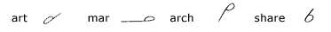
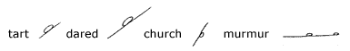
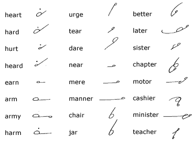
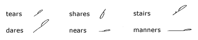
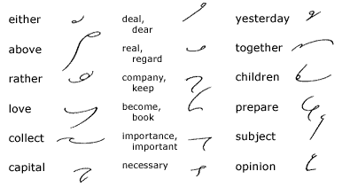
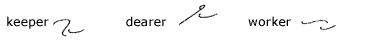
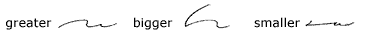
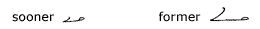
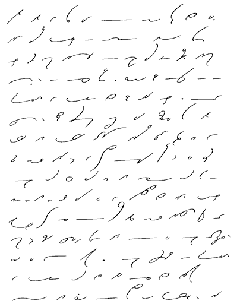

Unit
8
Method of Expressing R
71.
The circle is written with left motion to express r
following the vowel:
1. Before and after straight strokes:

2. Between straight strokes in the same direction:

72.
It is generally more facile to use the circle for the obscure
vowel sound heard in ur as in church, murmur,
urge, hurt.
73. Frequent-Word
Drill

S Following a Left-Motion
Circle
74. The letter s
is added to a final left-motion circle on straight strokes by changing
the circle to a loop:

75. Brief
Forms for Common Words

76.
After abbreviated words and words ending in a left-motion
circle on straight strokes, a disjoined r expresses er,
or, thus:

When the forms are distinctive, the r
is joined, thus:

When a brief form ends with the last consonant
of a word, the left motion circle is used to express or
and er after straight strokes:

77. Reading
and Dictation Practice

Transcription Key to this
Unit
- Next Unit -
|